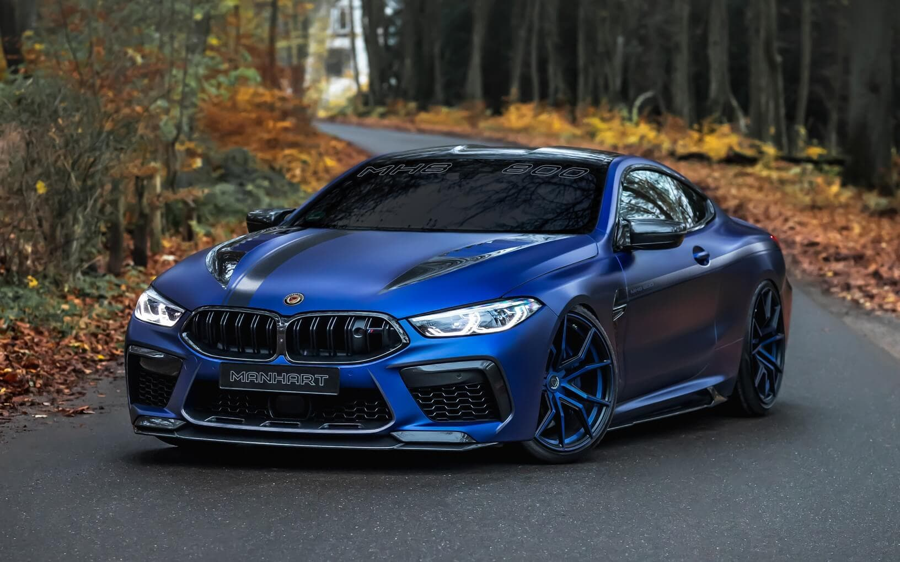
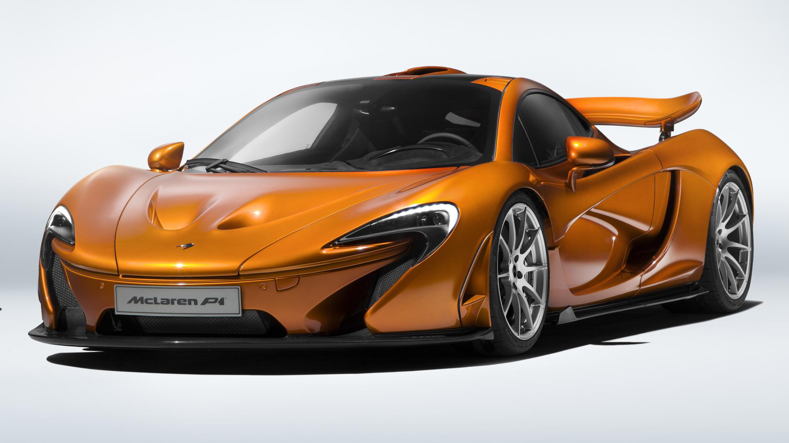
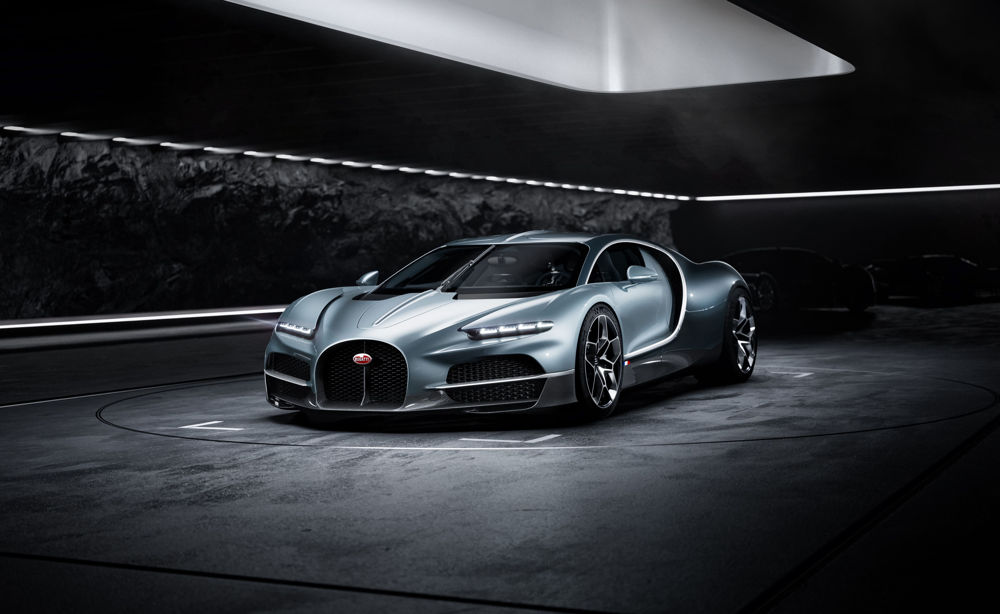

Comparing The Price and Features of Exotic Cars
BMW M8 Competition
- Price : $150,000
- Engine : V8 (8 cylinders Engine)
- Horsepower : 625 Hp
-
BMW M8 Coupe is the top model in the BMW M8 lineup and the price of M8 top model is Rs. 2.44 Crore. It gives a mileage of 8.77 kmpl. BMW M8 Coupe is available in Automatic (TC) transmission and offered in 9 colours: Isle of Man Green metallic, Tanzanite Blue metallic, Black Sapphire metallic, Marina Bay Blue metallic, Dravit Grey metallic, Daytona Beach Blue, Aventurine Red metallic, Skyscraper Grey metallic and Brooklyn Grey metallic.
McLaren P1
- Price : $1,633,865
- Engine : V8 (8 cylinders Engine with Turbocharger)
- Horsepower : 903 Hp
-
The McLaren P1 is a flagship sports car produced by British marque McLaren Automotive. Styled by American car designer Frank Stephenson, it is the second installment in McLaren's Ultimate Series after the McLaren F1. Considered to be the spiritual successor to the F1, the P1 was one of the first high performance sports cars to be introduced incorporating hybrid technology; the Porsche 918 Spyder having begun taking orders the prior to the P1 and the LaFerrari introduced alongside it. First shown as a concept on the 20th anniversary of the F1 at the 2012 Paris Motor Show, the P1 made its debut at the 2013 Geneva International Motor Show
Buggati Tourbillon
- Price : $4.1 million
- Engine : V16 (16 cylinders Engine),
- Horsepower : 1775 Hp
-
Bugatti states that the Tourbillon is a completely new design, and does not share any components with the outgoing Chiron, but in keeping with the Bugatti brand lineage, it does share many of its key design cues, including the horseshoe grille, central spine, C-shaped side body lines, and two-tone body colour. One of the stated inspirations for the Tourbillon was mechanical watches, with the car containing a fully analog center console operated by mechanical gears, designed to look like a watch movement, while the speedometer and tachometer needles were arranged to resemble an hour and minute hand.[6] Another design theme of the Tourbillon is a "skeletonized" mechanical design, where the mechanisms of components are made visible as a part of the design.